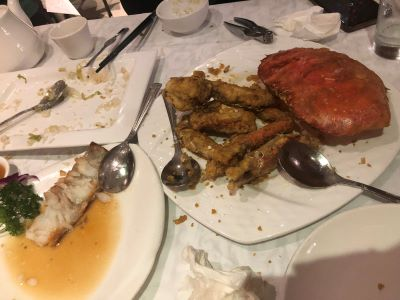
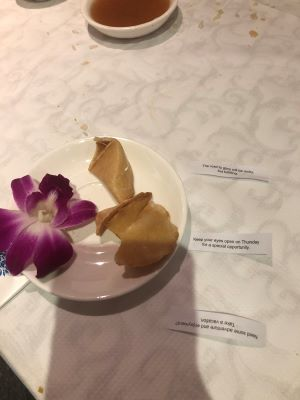
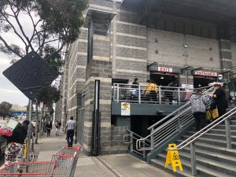

从西雅图到旧金山
终于找到一个很喜欢的歺厅，是在旧金山找到的，结果就顾着吃了，忘了照相，等到想起来，己经吃的差不多了😜

这是我们吃完后的fortune cookie. 猜猜那个是谁的？第一个是女儿的，第二个是我的-一直在想周四会有什么！😜 感觉挺有意思的。

这是Costco San Francisco. 头一次见到在市区的Costco。我一般是把所有的东西都放在包包里，到了商店就只把要用的带上，包包放在车里。这在市中心是不行的，可能被砸车子。结果我就被迫背着重重的包包！

×